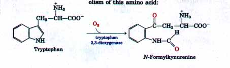
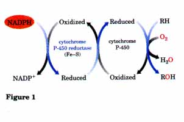

B O X 20-1 Mixed-Function Oxidases, Oxygenases, and Cytochrome P-450
In this chapter we encounter several enzymes that carry out oxidation-reduction reactions in which molecular oxygen is a participant. The reaction that introduces a double bond into a fatty acyl chain (Fig. 20-14) is such a reaction.
The nomenclature for enzymes that catalyze reactions of this general type is often confusing to students, as is the mechanism. Oxidase is the general name for enzymes that catalyze oxidations in which molecular oxygen is the electron acceptor but oxygen atoms do not appear in the oxidized product (but there is an exception to this "rule," as we shall see!). The enzyme that creates a double bond in fatty acyl-CoA during the oxidation of fatty acids in peroxisomes (see Fig. 16-13) is an oxidase of this type, as is the cytochrome oxidase of the mitochondrial electron transfer chain (see Fig. 18-11). In the first case, the transfer of two electrons to H2O produces hydrogen peroxide, H2O2; in the second, two electrons reduce ½O2 to H2O. Many, but not all, oxidases are flavoproteins.
Oxygenases catalyze oxidative reactions in which oxygen atoms are directly incorporated into the substrate molecule, forming a new hydroxyl or carboxyl group, for example. Dioxygenases catalyze reactions in which both of the oxygen atoms of O2 are incorporated into the organic substrate molecule. An example of a dioxygenase is tryptophan 2,3-dioxygenase, which catalyzes the opening of the five-membered ring of tryptophan in the catabolism of this amino acid:

When this reaction occurs in the presence of 18O2, the isotopic oxygen atoms are found in the two carbonyl groups of the product (shown in red).
Monooxygenases, which are more abundant and more complex in their action, catalyze reactions in which only one of the two oxygen atoms of 02 is incorporated into the organic substrate, the other being reduced to H2O. Monooxygenases require two substrates to serve as reductants of the two oxygen atoms of O2. The main substrate accepts one of the two oxygen atoms, and a cosubstrate furnishes hydrogen atoms to reduce the other oxygen atom to H2O. The general reaction equation for monooxygenases is
AH + BH2 + O-O  A-OH + B + H2O
A-OH + B + H2O
where AH is the main substrate and BHz the cosubstrate. Because most monooxygenases catalyze reactions in which the main substrate becomes hydroxylated, they are also called hydroxylases. They are also sometimes called mixed-function oxidases or mixed-function oxygenases, to indicate that they oxidize two dif ferent substrates simultaneously. (Note here the use of "oxidase"-a deviation from the general meaning of this term.)
There are different classes of monooxygenases, depending upon the nature of the cosubstrate. Some use reduced flavin nucleotides (FMNH2 or FADH2), others use NADH or NADPH, and still others use α-ketoglutarate as the cosubstrate. The enzyme that hydroxylates the phenyl ring of phenylalanine to give tyrosine is a monooxygenase for which tetrahydrobiopterin serves as cosubstrate (see Fig. 17-27). (This is the enzyme that is defective in the human genetic disease phenylketonuria.)
The most numerous and most complex monooxygenation reactions are those employing a type of heme protein called cytochrome P-450. This type of cytochrome is usually present in the smooth endoplasmic reticulum rather than the mitochondria. Like mitochondrial cytochrome oxidase, cytochrome P-450 can react with O2 and with carbon monoxide, but it can be differentiated from cytochrome oxidase because the carbon monoxide complex of its reduced form absorbs light strongly at 450 nm; thus the name P-450.
Cytochrome P-450 catalyzes hydroxylation reactions in which an organic substrate RH is hydroxylated to R-OH at the expense of one oxygen atom of O2; the other oxygen atom is reduced to H2O by reducing equivalents furnished by NADH or NADPH but usually passed to P-450 by an ironsulfur protein. Figure 1 shows a simplified outline of the action of cytochrome P-450, which has intermediate steps not yet fully understood.
Cytochrome P-450 actually is a family of closely similar proteins; serevalhundred members of this protein family are known, each with a different substrate specificity. In the adrenal cortex a specific cytochrome P-450 participates in the hydroxylation of steroids to yield the adrenocortical hormones, for example (Fig. 20-42). Cytochrome P-450 is also important in the hydroxylation of many different drugs, such as barbiturates, and other xenobiotics (substances that are foreign to the body), particularly if they are hydrophobic and relatively insoluble. The environmental carcinogen benzo[α]pyrene (found in cigarette smoke) undergoes cytochrome P-450-dependent hydroxylation in the course of its detoxification. Hydroxylation of such foreign compounds makes them more soluble in water and allows their excretion in the urine. Unfortunately, hydroxylation of some compounds converts them into toxic substances, subverting the detoxification system.
Reactions described in this chapter that are catalyzed by mixed-function oxidases are those involved in fatty acyl-CoA desaturation (Fig. 20-14); leukotriene synthesis (Fig. 20-17), plasmalogen synthesis (Fig. 20-28), conversion of squalene to cholesterol (Fig. 20-35), and steroid hormone synthesis (Fig. 20-42).
